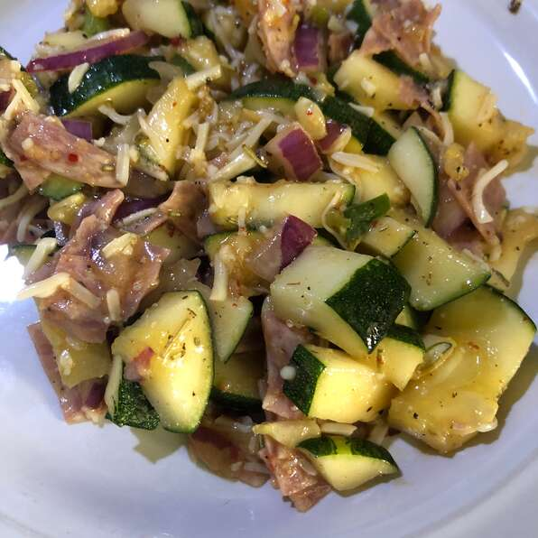

Italian Zucchini Salad

Ingredients Needed:
- 4 cloves garlic, crushed
- ½ teaspoon dried rosemary, or to taste
- sea salt and ground black pepper to taste
- 2 zucchini, diced, or more to taste
- ⅓ (4 ounce) package hard Italian salami, diced
- 4 mini fresh mozzarella balls, or more to taste
- 12 almonds, chopped
- ⅓ cup olive oil
- 1 dash balsamic vinegar
Below are the step to create your own dish of Italian Zucchini Salad
-
Mix garlic, rosemary, sea salt, and pepper together in a large bowl. Add
zucchini, salami, mozzarella cheese, and almonds. Mix well. Stir in
olive oil and balsamic vinegar. Let stand for 10 minutes, then serve.
- Enjoy your meal 😀